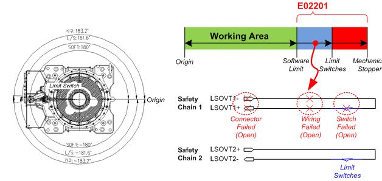
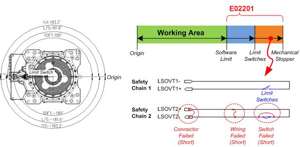

Previous error code: E0002 Hardware limit switch in operation
1.1.26.1. Outline
It is deviating from the software limit area of the robot. However, the input of the limit switch installed at the end of the operation area of each of the axes of the robot is not normal. Checking is required as there is a difference between the inputs of safety chain 1 and safety chain 2.
1.1.26.2. Causes and examine methods
|
(1) When not deviating from the hardware operation area n Check the limit switch wiring as there is a problem with safety chain 1.
(2) When deviating from the hardware operation area n Check the limit switch wiring as there is a problem with safety chain 2. |
(1) When not deviating from the hardware operation area

Figure 1.121 E02201 Main body limit switch input mismatch (safety chain 1 off) – inside the hardware operation area
Check the limit switch wiring as there is a problem with safety chain 1.
Even though the robot is inside the hardware limit switch installation area, safety chain 1 is monitored as off. This may be caused by the following reasons.
n Fault with the hardware limit switch: Opened due to some reasons such as damage to the switch.
n Wiring: Defective contact due to the disconnection of or damage to the wiring.
n Connector: Disconnection due to defective contact following the connector being loosened or damaged.
For more details about checking, refer to “Hardware Limit Switch Checking Methods.”
(2) When deviating from the hardware operation area

Figure 1.122 E02201 Main body limit switch input mismatch (safety chain 1 off) – inside the hardware operation area
Check the limit switch wiring as there is a problem with safety chain 2.
Even though the robot deviated from the hardware limit switch installation area, safety chain 2 is not capable of detecting the abnormality. In other words, safety chain 2 continues to stay in the closed state.
n Fault with the hardware limit switch: Short-circuited due to some reasons such as damage to the switch.
n Wiring: Short-circuiting of two lines of a pair of wirings.
n Connector: Short-circuiting between pins due to damage to the connector.
For more details about checking, refer to “Hardware Limit Switch Checking Methods.”